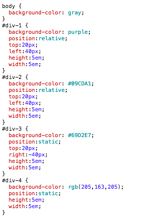
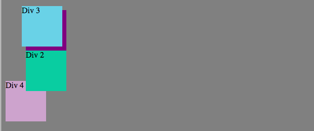
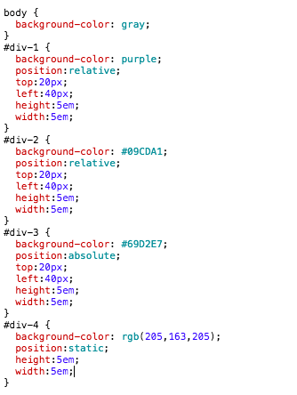
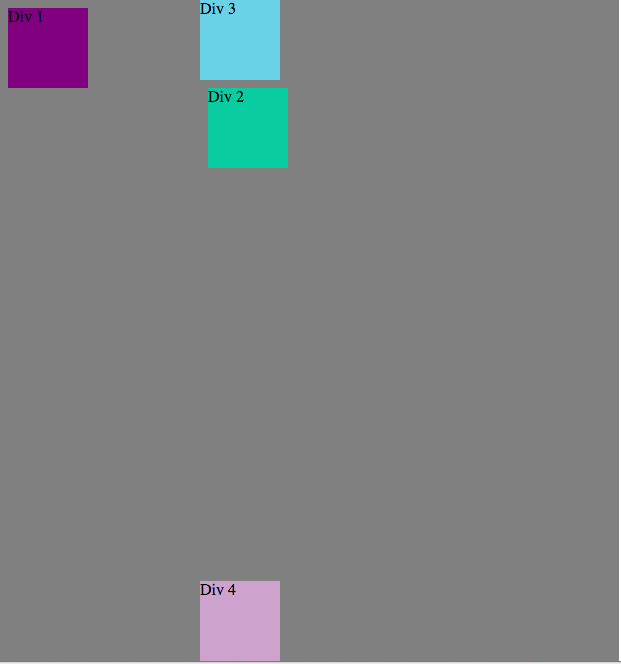
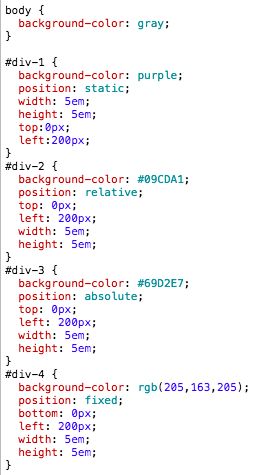

Web Design has been greatly simplified due to CSS.The positioning declarations are highly necessary to have complete control over styling a document using CSS. Each part of the document can be considered as an element that can be positioned at any part of the page using absolute, relative , fixed type of positioning. There is static and inherit too. There are four positioning properties that enable the position vlaues to set an object at a particular location:
- top
- right
- bottom
- left
position:static; - Every elements default position is static. The commands left, right, top and bottom have no effect on static as seen in the image below. This value is used only when there is a requirement to reset the value back to static from some other position value.


Relative and Absolute are the most confusing values. It is easy to mix them up.
position:relative; - This actually means relative to itself. This will have an effect only if the top, right , left or bottom values are set. For example if one sets the top value as top:10px; when the position is set to relative, the element will shift 10 pixels down from its normal or current position.Here, the element is within the flow of the document.

position:absolute; - This value enables us to place an element anywhere we wish to on the page. For example if one sets the top value as top:10px; when the position is set to absolute, the element will shift 10 pixels down from the page or window top edge.The element is removed from the flow of document and placed anywhere.Without the width property set, the elements can be stretched as wide or as tall as the content in it using the left,right,top, bottom commands. Setting all four to 0 will stretch the element tot he entire screen.This positioning style does not have any influence on other elements and are not influenced by others either. This can help the flexibility of the site majorly.


position:fixed; - This fixes an object to the window at a particular location. The object will not move even while scrolling. If one needs a footer to remain at the bottom come what may and not move, fixed positioning will help.
The below figure provides a quick view of all four position attributes in one.


Hope this helped! I would lvoe some feedback on this.
Some references: